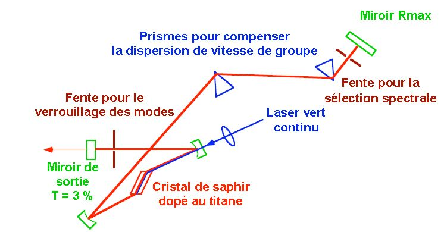
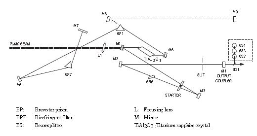
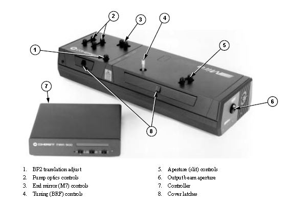
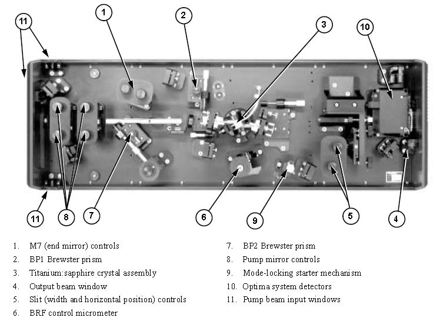
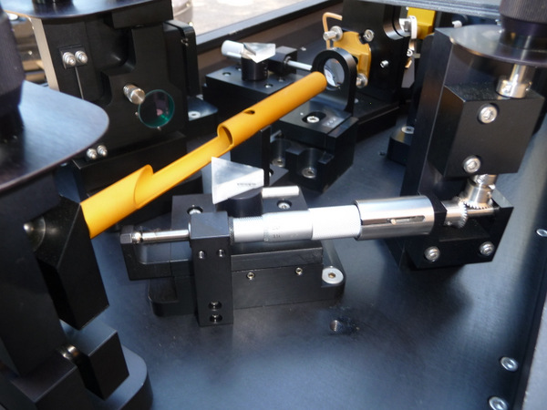

The Mira 900 is a Titanium Sapphire tunable femtosecond laser pumped by the Verdi V-10, 10 Watt pump.
The pulsed output has an average power of over 1.6 Watt.
A figure of the Mira, with a block diagram of the main functioning components is shown in Figure 1. The Mira uses a passive modelocking scheme; a saturable absorber, and a simple slit to continuous wave (CW) operation, and amplify short pulses. Additionally, the mirra can be configured for femtosecond, or picosecond pulsed operation.
A femtosecond oscillator can be summarized in a "black box" in which there are only optical elements such as mirrors, prisms, lenses and a crystal having 2 extra-ordinary properties.
We inject into this "black box" a continuous laser and it emerges a train of femtosecond pulses!
All the dynamics are around this famous crystal that is titanium-sapphire!
This crystal is the "holy grail" of laser physics.
It has the power to emit a very large amount of longitudinal frequencies and coupled them by the effect KERR!


Fig. 1


In a laser cavity whose amplifying medium has a sufficiently broad emission band as is the case with Titanium-Sapphire, several thousand longitudinal modes of the cavity can oscillate and be amplified. If there is no phase relationship between these modes, the emission of the laser consists of an incoherent superposition of these modes in continuous mode. On the other hand if one arrives by any means to put in phase these modes in the cavity, the emission regime becomes impulse, one speaks then about blocking modes (mode-locking).
Mode blocking is achieved by introducing into the laser cavity an element that modulates the losses.
To favor the impulse mode, this element must have a transmission which increases with the intensity which crosses it. In Titanium-Sapphire Oscillators it is the Kerr Optical effect that is used.
Indeed it will introduce the appearance of a Kerr lens in the crystal when the intensity increases.
This will modify the divergence of the beam in the cavity. A slot placed in the cavity will allow to select the mode corresponding to the pulse regime that will be able to settle permanently.
It is also possible to adopt a geometry of the laser cavity which favors the pulse mode compared to the continuous mode.
The second condition to realize is the compensation of the dispersion of the group time introduced by the elements crossed, mainly the crystal. Indeed, each mode has a different wavelength and therefore travels a different optical path in the cavity. Compensation is achieved either with a prism line introduced into the cavity or for newer oscillators using chirped mirrors.

The MIRA900 laser can work in femtosecond, picosecond and continuous mode between 680nm and 1000nm.